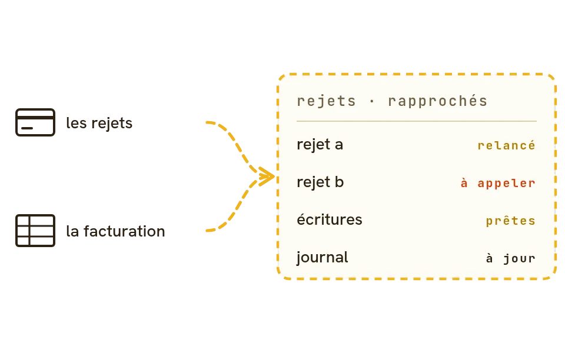
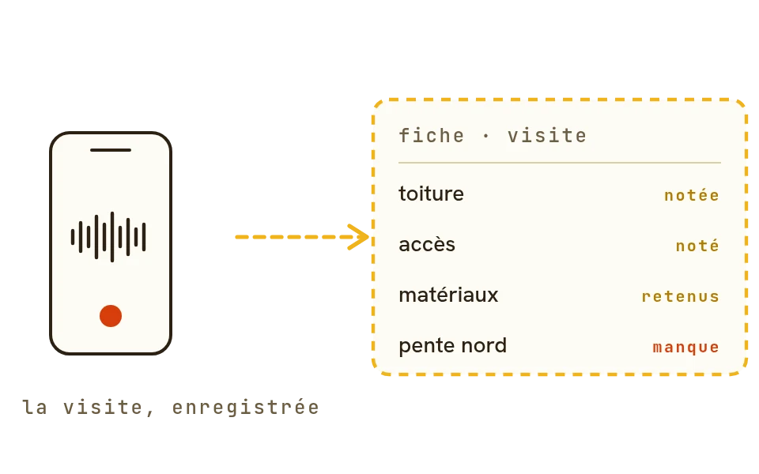
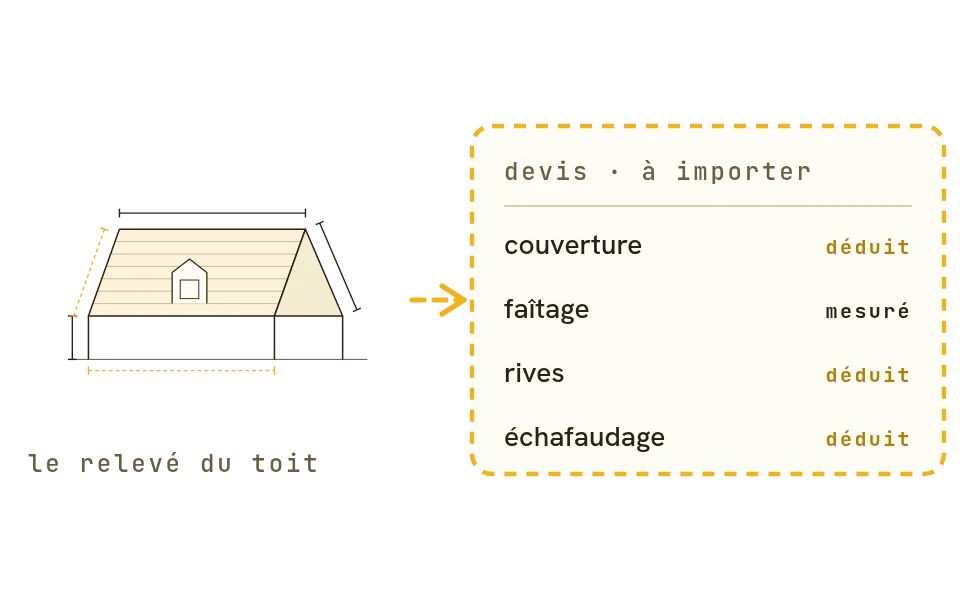
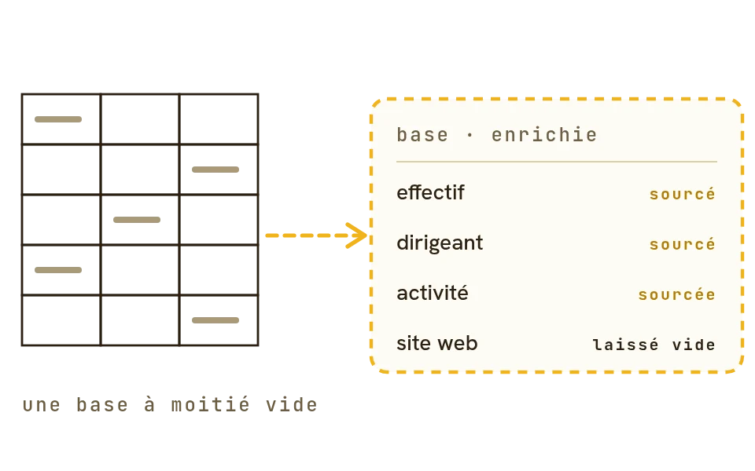

L'IA au travail dans votre entreprise · par Otomata, Marseille
otomata.tech · oto.cx
alexis@otomata.tech
Marseille, France
Accompagnement IA des dirigeants
Votre IA sait rédiger, chercher, résumer. Il lui manque votre entreprise.
Claude, ChatGPT ou Mistral ne connaissent ni vos clients, ni vos devis, ni la façon dont votre équipe travaille.
Nous partons d'une tâche qui vous coûte du temps chaque semaine, nous construisons l'agent qui la prend en charge,
et nous le laissons en place dans l'assistant que vos équipes utilisent déjà.
Pas un plan de transformation : une tâche réglée en quelques jours, puis la suivante.
Au verso, des exemples de ce que ça donne.
Comment nous travaillons
une tâche à la fois
01 — PARTIR DU TERRAIN
Une tâche, pas un plan
Un entretien avec vous ou la personne concernée : quelle tâche revient chaque semaine, prend des heures,
pèse sur tout le monde ? C'est elle que nous traitons en premier.
02 — CONSTRUIRE
Un agent en 0,5 à 2 jours
Nous branchons vos outils et écrivons la procédure avec celui qui fait le travail. L'agent la suit pas à pas ;
nous le testons sur vos vrais dossiers, et vous relisez avant qu'il agisse.
03 — LAISSER EN PLACE
Vos équipes, autonomes
L'agent vit dans oto, notre plateforme, à la disposition de toute l'équipe. Chaque nouvel usage s'ajoute au même
socle : le deuxième agent coûte moins que le premier.
Ce que fait oto
la plateforme qui reste en place
01 — LE CONTEXTE
Votre entreprise, au même endroit
Procédures, pages de dossier, tableaux de suivi : le savoir de l'entreprise est rangé dans oto, et l'IA y
cherche au lieu de deviner. Ce qu'un collaborateur apprend à l'agent profite à tous.
02 — UN SEUL CONNECTEUR
Tous vos outils, un seul geste
Un connecteur à ajouter dans Claude, ChatGPT, Mistral ou Copilot, et derrière, une centaine de services :
messagerie, agenda, drive, Pennylane, CRM, Slack, WhatsApp, données entreprises… selon les droits de chacun.
03 — LA MAÎTRISE
Des permissions, pas des consignes
Les clés d'accès restent dans un coffre chiffré, jamais dans la conversation. Les données sensibles sont masquées
avant l'IA, chaque action est tracée. Hébergé en France, code ouvert.
Tarifs
prix hors taxes
AccompagnementOtomata
Journée d'accompagnementconstruction d'agents, ateliers, suivi du dirigeant1 000 € / jour
Un agent métierune tâche réglée, de l'entretien à la mise en service0,5 à 2 jours
Diagnostic10 entretiens, débrief et feuille de route5 000 €
Plateforme otoabonnement
Gratuitmembres illimités, pour démarrer0 €
Équipetout oto, sans engagement25 € / membre / mois
Grands comptesinstance dédiée, on-premise possiblesur contrat
TVA en sus · conditions générales : oto.cx/cgv
ETI et grands groupes
Sur les périmètres plus larges, nous intervenons avec nos partenaires, notamment en conduite du changement :
l'outil ne sert que si les équipes se l'approprient.
oto.
des cas concrets · oto.cx/cas-usage
Chez nos clients, en service ou en test réel
Quatre tâches qui ont quitté le bureau.

FINANCE · ÉDITEUR DE LOGICIEL
Les prélèvements échoués, traités avant le café
Avant
Chaque semaine, des rejets à pointer un par un, à rapprocher, à relancer.
L'agent
Lit les rejets, les rapproche des clients, applique vos règles de relance et de nouvelle présentation, prépare les écritures.
Mesuré : deux heures par semaine ramenées à dix minutes. Agent construit en une demi-journée.
pour démarrer · vos règles de relance, écrites une fois

TERRAIN · BÂTIMENT
Vous parlez avec le client ; la fiche de visite s'écrit seule
Avant
Le compte rendu écrit de tête le soir, les détails mélangés entre bâtiments.
L'agent
Transcrit l'enregistrement du téléphone avec le vocabulaire du métier, puis rédige une fiche par bâtiment : travaux, matériaux, décisions, ce qui manque pour le devis.
Mesuré sur une visite réelle de 28 minutes : un tiers de mots restitués de plus qu'un enregistreur grand public, aucun échange perdu, 0,08 € de transcription.
pour démarrer · enregistrer dès le début de la discussion

COMMERCIAL · BÂTIMENT
Le devis sort du relevé ; vous relisez au lieu de saisir
Avant
Des heures à choisir les ouvrages et à tout ressaisir dans le logiciel de devis.
L'agent
Lit le relevé, déduit les longueurs qui manquent et prépare les lignes dans votre bibliothèque d'ouvrages, chaque ligne déduite marquée comme telle.
Le chiffrage devient une relecture : un fichier prêt à importer, avec les hypothèses listées à vérifier.
pour démarrer · votre bibliothèque d'ouvrages et trois devis récents

PROSPECTION · ÉDITION
Des milliers de comptes qualifiés, chaque fait avec sa source
Avant
Une base de milliers de comptes à moitié vide, qualifiée à la main.
L'agent
Une équipe d'agents traite la base ligne par ligne, sous une règle stricte : une case vide vaut mieux qu'une valeur inventée.
Des milliers de fiches enrichies et sourcées en quelques jours.
pour démarrer · quoi chercher, où, et quand laisser vide
Et aussi, sur le même socle
une tâche = un agent
Commercial
Demandes entrantesChaque demande reçoit une réponse dans l'heure.
Préparer un rendez-vousArriver en connaissant déjà tout le dossier.
Veille des appels d'offresLes consultations qui vous concernent, résumées chaque matin.
Suivi et gestion
Une page par clientTout le dossier sur une page, que n'importe qui reprend.
Relance des impayésChaque facture échue relancée, au bon interlocuteur.
TrésorerieVos chiffres à jour, en posant la question comme à un comptable.
Bureau
Triage de la boîte mailTriée chaque matin, les dossiers à jour sans ressaisie.
Compte rendu de réunionLes décisions écrites dans l'heure, les actions suivies.
Questions internesLa réponse avec sa source, sans interrompre un collègue.
Terrain
Relevé minimalQuatre cotes au lieu de vingt-cinq : l'agent déduit le reste.
Contrôle de devisChaque écart expliqué, la règle corrigée pour la fois suivante.
Publications réseauxUne présence régulière à partir de vos chantiers.